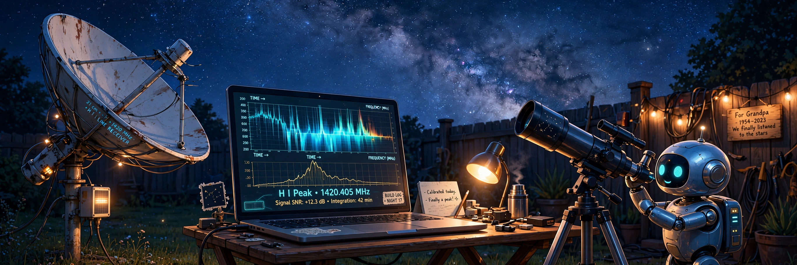

Tonight's Sky · Build Your Own
Converting the salvaged DIRECTV dish into a 21 cm deep-sky radio telescope.
In memory of Henry Douglas Powell — ham radio operator since 1956.
Rev 1: 4 November 2026, prepared with Muse. Rev 2 engineering edition: 25 November 2026, prepared with Google Antigravity (Gemini Neon) — the same day its DipoleLab bench landed in the Radio Room. The dish, the mount, and the idea are the family's.
Converting the Salvaged DIRECTV Dish into a 21 cm Deep-Sky Radio Telescope In memory of Henry Douglas Powell — Ham Radio Operator Since 1956 Rev 1: November 4, 2026 · Rev 2 Engineering Addendum: November 25, 2026
Rev 1 laid down an outstanding, honest foundation: keep the salvaged pole mount and buried coax, put a filtered LNA directly at the dish, skip motors until First Light succeeds, and aim for the 1420.406 MHz Galactic Hydrogen Line (H-I).
Rev 2 keeps the same ~$115–$200 Stage 1 budget while adding the practical RF engineering details that separate "staring at a wavy noise floor" from repeatable, frame-worthy First Light:
300 K ground spillover noise, and realistic expectations on Cassiopeia A vs. the Milky Way).12 GHz) test using the original/surplus Ku LNB to verify exact dish aim on the Sun & Moon before touching 1420 MHz.$12–$20 Feeds (Lightweight Copper Biquad + #10 / 1-Gallon Paint-Can Cantenna — cutting Stage 1 feed cost by $50–$80).$0): How to flatten SDR filter ripple so the H-I peak pops cleanly out of the noise — and measure the spiral-arm rotation speed of the Milky Way in km/s.~$15): Keeping water out of 1.42 GHz coax and laptop switching noise out of your waterfall.Everything in this build remains 100% receive-only. No transmission, no license required.
~82 cm wide × 57 cm tall, ~32.5" × 22.5", with original feed arm).75 Ω RG-6 coax run back into the house (taped for weather protection).1420.4 MHz)At 1420.406 MHz (λ = 21.11 cm), a ~0.80 m × 0.56 m dish is ~3.8 λ × 2.6 λ across, giving a beamwidth of roughly 18° × 25° and an effective collecting area of ~0.28–0.35 m².
| Target | Detectable on 0.8 m @ 1420 MHz? | Expected Signal & Why |
|---|---|---|
| The Sun | YES — Easy | Massive continuum source (~100,000+ Jy), gives a clear ~2–5 dB wideband rise. Best pointing & Y-factor check. |
Milky Way Galactic Plane (H-I) | YES — Primary First Light! | Cold neutral hydrogen fills your entire ~18° beam (T_b ≈ 20–100 K), so wide beamwidth does not dilute it! Clearly rises 0.5–1.5 dB above calibrated baseline in 2–5 min of integration, showing multiple Doppler-shifted spiral arms! |
| Moon / Ground vs. Cold Sky | YES — Calibration | Pointing at ~300 K yard dirt vs. cold ~10 K zenith sky produces an unmistakable Y-factor power jump — proves your LNA + SDR chain is working in 10 seconds! |
| Cassiopeia A / Cygnus A | Not reliably on 0.8 m | Rev 2 Correction: Although Cas A (~1,700 Jy today — the source fades ~0.7% a year, so the older ~2,400 Jy scale overstates it) is the brightest northern extrasolar point source, a 0.8 m dish only collects ~0.2 K of continuum rise against ~100–150 K system noise (~0.2%, smaller than normal SDR thermal gain drift). Save Cas A / Cyg A for Stage 4 (a 1.5–2.4 m dish) or a Dicke-switched continuum receiver! |
$0)Complete these 5 checks before ordering parts:
Record:
W (horizontal rim-to-rim) and Height H (vertical rim-to-rim).d at the center (lay a straightedge vertically across the rim and measure down to the reflector surface).R_top), bottom rim (R_bot), and dish center (R_mid).~20°–25°): A DIRECTV Slimline is an offset-fed reflector (and wider than tall so it can look at multiple satellites). Its true radio beam points ~20°–25° HIGHER than the face of the dish appears!$0): On a sunny afternoon, aim the dish until the shadow of the feed arm tip lands dead-center on the dish face — your radio beam is now pointed directly at the Sun! Compare against the Sun's known altitude/azimuth (via Stellarium or SunCalc) to log your exact bracket offset to ±1°.Do not assume the buried line is a simple straight wire:
1420 MHz or block 5 V DC bias-tee power. Bypass any splitters so it is a direct run (keep a 2 GHz+ rated ground block / lightning arrester!).1420 MHz RF fine (via skin effect), but has high DC resistance (~3–6 Ω per 100 ft).~180 mA, right at the ceiling of the RTL-SDR Blog V4's internal 4.5 V bias-tee! If your buried line drops more than ~0.8 V at 180 mA (R_loop > 4 Ω), the SAWbird will brown out or trip the V4's current limit.R_loop > 4 Ω, power the SAWbird locally via its micro-USB port (5 V USB battery bank for portable tests, or a dedicated external 5 V bias-tee injector, or move the RTL-SDR + porch laptop/Pi to the base of the pole).$0 Low-Noise Trick)$0): When aiming below ~45° elevation with a small 0.8 m dish, the bottom rim of the feed beam can "see" warm 300 K yard ground. Whenever possible, perform your first drift scans high (60°–85° elevation), or if your mount allows, invert the offset dish upside-down (feed arm on top) so any spillover sees cold 3 K sky instead of warm dirt!$0–$20)Optional, takes 1 hour, and gives instant gratification before building the 1420 MHz feed!
If the old DIRECTV Ku-band LNB still works — or you pick up a generic $10 Universal Ku-band FTA LNB + $10 inline satellite signal finder meter (or 13 V power inserter into the RTL-SDR at 950–1950 MHz):
11–12 GHz (λ = 2.5 cm), your 0.8 m dish has a razor-sharp ~2° beam!~230 K thermal radio glow!), geostationary satellites, and even have someone hold a warm hand in front of the feed!1420 MHz.~$115–$195)[ 1420 MHz Feed ] ──(short 6" SMA)──► [ SAWbird+ H1 LNA/Filter ] ──(SMA-to-F)──► [ Buried RG-6 ] ──► [ F-to-SMA ] ──► [ RTL-SDR Blog V4 ] ──► [ Computer ]
▲ ▲
At old LNB Inside waterproof
focal point box AT THE DISH!Why the LNA MUST sit directly at the feed: By Friis's Noise Figure formula (F_total = F_1 + (F_2 − 1) / G_1), putting the SAWbird+ H1's ~40 dB (10,000×) gain and ~0.8 dB noise figure right at the feed makes 6–10 dB of downstream RG-6 coax loss almost invisible to your SNR!
| Item | Recommended Part | Budget DIY | Commercial | Notes |
|---|---|---|---|---|
| 1420 MHz Feed | DIY Copper Biquad or Paint-Can Cantenna / Commercial Patch | $12–$20 | $65–$95 | See exact build dimensions below! |
| Filtered LNA | Nooelec SAWbird+ H1 (barebones or alum. enclosure) | $45 | $55 | Dual-LNA + tight 1420 MHz SAW bandpass; essential! |
| SDR Receiver | RTL-SDR Blog V4 (R828D + TCXO) | $35–$40 | $40 | Built-in 1 ppm TCXO keeps 1420.406 MHz rock-steady! |
| Adapters & 50 Ω Load | SMA-Male/Female jumpers, 2× SMA-to-F adapters, 1× 50 Ω SMA dummy load | $18 | $20 | Do NOT skip the $5 50 Ω load — it makes bandpass calibration effortless! |
| Weatherproofing & RFI | Small gasketed plastic box, silica pack, self-amalgamating silicone tape, 2× snap-on USB ferrites | $15 | $15 | One drop of rainwater inside 1.4 GHz coax ruins the run. |
| TOTAL STAGE 1 | ~$125–$138 | ~$195 | Zero motors, zero license, genuine H-I detection! |
At f₀ = 1420.406 MHz, free-space wavelength is λ = 21.11 cm (8.31 inches).
#### Option A (Recommended for DirecTV Slimline Arm): Lightweight Copper Biquad Feed (~$12) Why: Weighs under 150 g (won't sag the Slimline feed arm), naturally matches the wide f/D ≈ 0.6 illumination angle of an offset dish, and takes 30 minutes to bend with pliers!
12–14 AWG solid bare copper wire (~42.5 cm total) bent into a figure-8 of two diamonds meeting at the center.L_side = λ / 4 = 5.28 cm (52.8 mm).22 cm × 22 cm (~8.7" × 8.7").wire-to-plate): λ / 8 = 2.64 cm (26–28 mm) supported by small plastic/nylon standoffs (never metal spacers in the center!).2.6 cm up to the biquad center). Solder the center pin to one apex of the figure-8 and the coax outer shield to the opposite apex (~2 mm gap).#### Option B: Classic Circular Waveguide "Cantenna" (~$15) Why: Excellent shielding against yard spillover noise (300 K dirt) and clean circular symmetry.
D = 15.6 cm (6.14").TE₁₁ cutoff: f_c = 17571 / 15.6 = 1126 MHz (cleanly below 1420 MHz).TM₀₁ higher-mode cutoff: 1471 MHz (cleanly above 1420 MHz — pure single mode!).λ_g = 34.63 cm.λ_g / 4 = 8.66 cm (86.6 mm) measured from the flat inside bottom of the can to the center of the SMA hole.5.1–5.3 cm (12 AWG copper wire soldered straight into the SMA Female bulkhead center pin — start at 5.3 cm and trim 1 mm at a time if you borrow a NanoVNA!).~18–26 cm (a standard #10 can at 17.8 cm works well; bracing it on the Slimline arm with a lightweight aluminum strap prevents droop).$0)This is where beginners either struggle for weeks or nail the Milky Way on Night One:
Before looking for hydrogen, prove your hardware chain is alive:
1420.4 MHz, gain ~35–42 dB, bias-tee ON (or USB powered), bandwidth 2.4 MHz.~10–20 K).~300 K).+1.5 to +3.5 dB! If it doesn't jump, check LNA power (5 V at SAWbird LED!), hidden splitters, or reversed SMA input/output ports on the SAWbird.Raw RTL-SDR + SAWbird spectra have a curved/wavy filter shape (±2 dB ripple) that easily hides a 0.8 dB hydrogen line. Always divide out the baseline using one of these free methods:
$5 50 Ω SMA dummy load directly onto the SAWbird input, record a 60-second Reference Spectrum (S_ref), reconnect the feed, record the sky (S_sky), and compute (S_sky / S_ref) − 1. (Built right into VIRGO and ezRA!)1420.4 MHz (S_on), then tune the SDR 1.2 MHz away to 1421.6 MHz (S_off, where no hydrogen exists) and divide S_on / S_off! Works remotely from inside the house!ezRA automatically identifies the coldest off-Milky-Way hours and uses them as the calibration baseline!pip install astro-virgo — one Python command captures, calibrates, applies LSR Doppler correction, and outputs a publication-style hydrogen-line plot!).0.6–1.2 m backyard dishes, turns overnight recordings into full Milky Way drift-scan heatmaps and velocity spectra.$0 Real Science: Measure the Milky Way's Rotation Curve!Don't just plot frequency — convert Δf into Doppler radial velocity: ``text v_obs (km/s) = 299,792.46 × (1420.40575 − f_MHz) / 1420.40575 Rule of thumb: 1 kHz shift ≈ 0.211 km/s | 100 kHz shift ≈ 21.1 km/s ` Point the dish at Declination +40° to +45° (Cygnus region — high overhead in northern latitudes, minimal ground noise!). When the Galactic Plane drifts through your beam, you won't just see a single bump — you will see a double/multi-peaked profile spanning ~150 km/s`: distinct spiral arms of the Milky Way (Local Arm, Perseus Arm, Outer Arm) rotating around the galactic center at different speeds!
First Light Done When: You save two repeatable drift-scan plots across two separate nights showing the 1420.4 MHz Milky Way peak arriving 3 minutes 56 seconds earlier each solar day (Sidereal Time proof that the signal is genuinely celestial and not local RFI!). That sidereal-shift plot is worthy of framing right next to Henry Douglas Powell's callsign.
$0–$50 Science TargetsOnce Stage 1 is singing, your porch laptop / server + RTL-SDR V4 immediately unlocks two extra backyard radio astronomy projects for almost nothing:
$0, uses existing server/laptop)rtl_power / VIRGO / ezRA on a scheduled cron job so every morning over coffee you review the previous night's Galactic transit and solar radio flux!10° every 2–3 days (just loosening two bolts on the mount!) — in 2 weeks you will stitch together a real 2D Hydrogen Map of the Northern Milky Way with zero motors!20.1 MHz (~$15)20.1 MHz wire half-wave dipole (L = 468 / 20.1 = 23.3 ft, hung ~12 ft high in the yard) to listen to Io-triggered decametric radio storms from Jupiter (sounds like ocean surf / woodpeckers — NASA's Radio JOVE frequency!) and Type III Solar Radio Bursts!1694 MHz, ~$55)1694 MHz feed (or keep your biquad trimmed/swap a Nooelec SAWbird+ GOES LNA) on the exact same 0.8 m DirecTV dish pointed at GOES-East/West to pull down live, unencrypted high-resolution weather satellite imagery of the entire Western Hemisphere!$80–$190): NEMA 17/23 steppers with worm-gear reduction + Arduino/OnStep + hamlib rotctld + Stellarium/Gpredict. At an 18° beamwidth, pointing accuracy only needs to be ±1°–2° — very forgiving mechanically!1.5–2.4 m): Same SAWbird+ H1, same RTL-SDR V4, same server software — 4×–9× the collecting area, unlocking Cassiopeia A, Cygnus A, Taurus A (Crab Nebula), Orion A, and sharper spiral-arm resolution!2 GHz+ rated inline coax lightning arrester / grounding block where the RG-6 enters the house (confirm it passes 5 V DC if using bias-tee!).5 V DC low-voltage only at the dish).| Stage | Scope | Budget DIY Path | Commercial Feed Path |
|---|---|---|---|
| Stage 0 | Dish survey, offset angle check, RG-6 DC/splitter audit | $0 | $0 |
| Stage 0.5 (opt.) | Ku-band 12 GHz "Itty Bitty" Sun/Moon test | $0–$20 | $0–$20 |
| Stage 1 | First Light 21 cm H-I Telescope (Feed + SAWbird+ H1 + RTL-SDR V4 + 50 Ω load + weatherproofing) | ~$125–$140 | ~$195 |
| Stage 2 | Overnight server logging + Milky Way map (+ optional $15 Jupiter dipole) | $0–$20 | $0–$30 |
| Stage 3 (later) | Motorized Az/El tracking (steppers + OnStep) | $80–$190 | $80–$190 |
Dad's instinct was spot-on: the sky has been broadcasting the song of the Milky Way's hydrogen clouds at 1420.406 MHz for billions of years. With a salvaged dish, a fifty-dollar amplifier, a forty-dollar receiver, and the patience to let the Earth turn, you can catch it from the backyard.